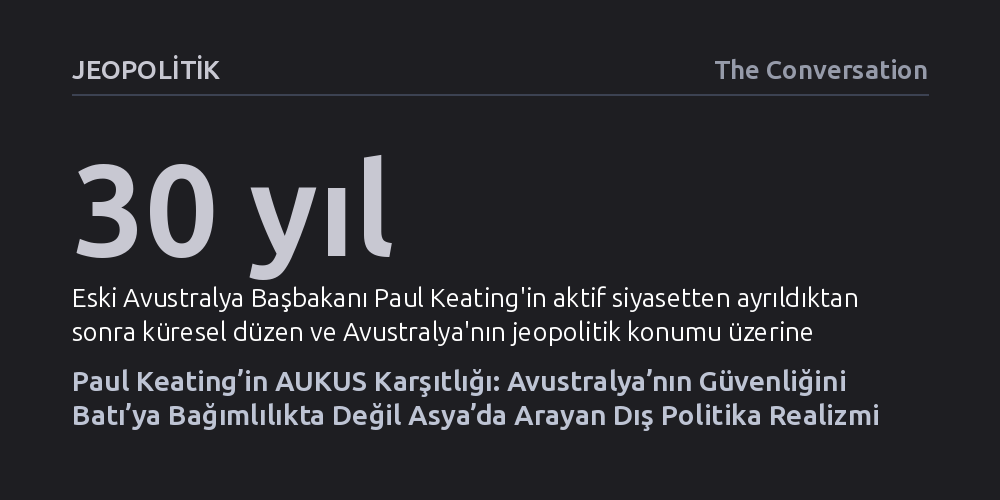

JEOPOLITIK · The Conversation · 2026-09-09
Eski Avustralya Başbakanı Paul Keating’in AUKUS paktına sert muhalefeti, ülkenin güvenliğini ABD’ye bağımlılıkta değil Asya ile kurulacak doğrudan ilişkilerde gören pragmatik İşçi Partisi realizmine dayanıyor. Yeni bir biyografi, bu tutumun geçici bir öfkeden ziyade tarihsel bir stratejinin devamı olduğunu gösteriyor.
Orta ölçekli bir ülkenin güvenliğini küresel süper güçlerin vesayetinde aramak yerine, kendi coğrafi komşularıyla gerçekçi ve bağımsız ortaklıklar kurmasının daha kalıcı bir dış politika sağlayabileceğini gösterir.

Avustralya’nın eski başbakanlarından Paul Keating, aktif siyasetten çekilmesinin üzerinden geçen otuz yılda özellikle iki konuda kamuoyunda ses getiren değerlendirmeler yaptı: Sidney’in kentsel dönüşümü ve Avustralya’nın küresel düzendeki konumu. Keating’in son dönemde en sert muhalefeti yönelttiği konu ise Canberra yönetiminin ABD ve Birleşik Krallık ile kurduğu AUKUS nükleer denizaltı paktı oldu. Tarihçi James Curran’ın arşiv kayıtları ve bizzat Keating ile yaptığı görüşmelerle hazırladığı yeni biyografi, bu sert çıkışların anlık bir öfkeden değil, başbakanlığı döneminde şekillenen sağlam bir jeopolitik mantıktan kaynaklandığını ortaya koyuyor.
Keating’in benimsediği dış politika felsefesi, Avustralya siyasetine uzun yıllar yön veren ve ulusal güvenliği uzak Anglosakson müttefiklerin koruyucu kanatları altında arayan teslimiyetçi reflekslere temelden karşı çıkıyor. Curran’a göre eski başbakan, Avustralya’nın bağımsız bir ulus kimliğiyle kendi coğrafyasıyla doğrudan yüzleşmesi gerektiğine inanıyor. Bu çerçevede AUKUS, Canberra’nın Washington’a sorgusuz boyun eğmesi ve eski sömürgeci ana vatan Londra’nın kollarına geri dönmesi anlamına gelen tehlikeli bir egemenlik kaybı olarak değerlendiriliyor.
Keating 1991 yılının sonunda başbakanlık koltuğuna oturduğunda, Sovyetler Birliği’nin dağılmasıyla birlikte dünya düzeni köklü bir kırılmanın eşiğindeydi. Daha önce maliye bakanlığı yaptığı dönemde Avustralya dolarını dalgalı kura geçirerek, yabancı bankalara lisans tanıyarak ve korumacı gümrük duvarlarını indirerek ülke ekonomisini dışa açmıştı. Başbakan olduğunda ise bu serbest piyasa reformlarını, Avustralya’yı Asya-Pasifik havzasının ayrılmaz bir parçası kılacak geniş kapsamlı bir bölgesel vizyonla bütünleştirdi.
Bu vizyonun en kritik aracı, Keating’in sıradan bir bürokratik toplantı olmaktan çıkarıp liderler zirvesine dönüştürdüğü Asya-Pasifik Ekonomik İşbirliği (APEC) örgütü oldu. Keating, ABD Başkanı Bill Clinton’ı ikna ederek ve Endonezya lideri Suharto ile kurduğu yakın kişisel bağı kullanarak Washington ve Pekin yönetimlerini aynı masa etrafında toplamayı başardı. Temel amaç, açık bölgeselcilik anlayışıyla kurulacak çok taraflı ticaret bağlarının zamanla Asya-Pasifik’te kalıcı bir güvenlik mimarisine zemin hazırlaması ve olası bir bölgesel hegemonya tehlikesini dengelemesiydi.
Buna karşın Keating’in büyük bölgesel hedefleri, kendi döneminde Avustralya kamuoyunun gündelik gerçekleriyle bütünleşmekte yetersiz kaldı. 1990’ların başında ülke ekonomisi, Büyük Buhran’dan bu yana görülen en şiddetli işsizlik dalgasıyla ve peş peşe gelen şirket iflaslarıyla sarsılıyordu. Bill Clinton APEC görüşmelerini Amerikan işçisinin istihdamıyla doğrudan ilişkilendirirken, Keating Canberra’da derin durgunluk ve yüksek faiz altında ezilen halka bölgesel entegrasyonun teorik faydalarını anlatmayı tercih etti.
Bu tepeden inme diplomatik yaklaşım, dış politika hamlelerinin toplumun geniş kesimlerince anlaşılamamasına yol açtı. 1995 yılında Endonezya ile gizlice imzalanan tarihi güvenlik anlaşması dış politika bürokrasisinde büyük yankı uyandırsa da ekonomik darboğazdaki seçmende karşılık bulmadı. Dahası Keating’in Suharto yönetimiyle kurduğu pragmatik ilişki, 1991 Dili katliamının hemen ertesinde insan hakları ve Doğu Timor meselesini ikincil plana ittiği gerekçesiyle meşruiyet tartışmalarını da beraberinde getirdi.
Akademik çevreler Avustralya İşçi Partisi geleneğini çoğunlukla Birleşmiş Milletler ve çok taraflılık eksenli liberal uluslararasıcılık ile tanımlasa da Keating çok daha köklü bir gerçekçi çizginin mirasçısıdır. Bu realizm, İkinci Dünya Savaşı ertesinde Bert Evatt’ın Avustralya’nın kuzeyindeki sömürgelerin geleceğine dair sergilediği pragmatik yaklaşımdan, Gough Whitlam’ın komünist Çin’i hızla tanımasına kadar uzanan tarihsel bir sürekliliğe dayanır.
Curran’ın analizine göre Keating’in AUKUS paktına yönelttiği amansız eleştirinin merkezinde tam olarak bu tavizsiz realizm yatar. Eski başbakana göre nükleer denizaltı hamlesi, ulusal egemenlikten vazgeçmek ve geçmişin sahte güvenlik sığınaklarına geri çekilmekten ibarettir. Keating’in stratejik mirasının özü, Avustralya’nın geleceğini teminat altına almak için güvenliğini "Asya’dan korunarak değil, Asya’nın içinde" araması gerektiği gerçeğidir.